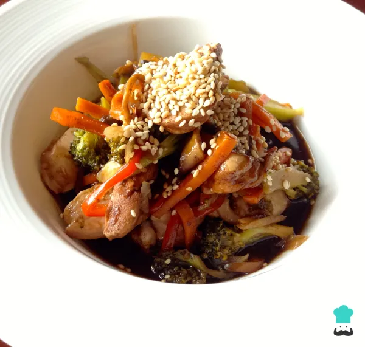

RECETA: Pollo Teriyaki

Ingredientes:
- 2 Pechuga de pollo deshuesada.
- Taza de Brócoli previamente cocinado.
- 1 taza de Cebolla blanca en plumas.
- 1 taza de Zanahoria en julianas.
- 1 taza de Pimiento rojo en julianas.
- 1 taza de Champiñones tajados.
- 1 taza de Salsa teriyaki.
- 1 pizca de Ajonjolí.
Preparación:
- Nuestro primer paso para realizar la receta de pollo teriyaki es prealistar los ingredientes.
- Lleva una sartén a fuego medio con una cucharadita de aceite de ajonjolí o, si no lo consigues, un poquito de aceite de oliva. Cuando esté caliente, adiciona la cebolla en plumas y saltea un poco. Si dispones de wok, utilízalo en lugar de la sartén, el resultado será mucho mejor.
- Agrega el pimentón y las zanahorias una vez observes que nuestra cebolla toma un tono transparente, saltea por algunos minutos hasta que estén crocantes.
- Incorpora el brócoli y los champiñones, mezcla bien con el resto de los ingredientes y saltea. Recuerda que es importante que el brócoli esté previamente cocinado.
- En un lado de la sartén agrega la pechuga de pollo en tiras gruesas como se observa en la fotografía. Saltea muy bien con el resto de ingredientes para seguir con la elaboración del pollo con verduras.
- Una vez observes que los ingredientes están salteados, báñalos con la salsa teriyaki, agrega un poco de pasta de ajo para dar un toque de sabor y mezcla bien. Apaga el fuego cuando esté listo.
Truco: Si quieres, puedes incorporar más verduras a la receta.
- Sirve la receta de pollo teriyaki espolvoreando un poco de ajonjolí por encima. Puedes acompañar este plato japonés con arroz blanco o integral, pues la salsa va muy bien con estos productos. ¡Disfruta!